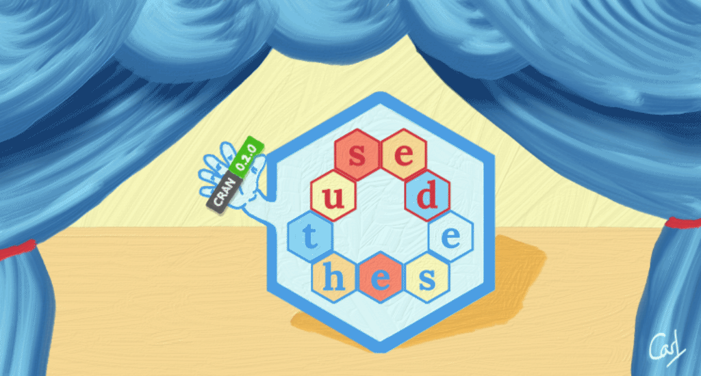
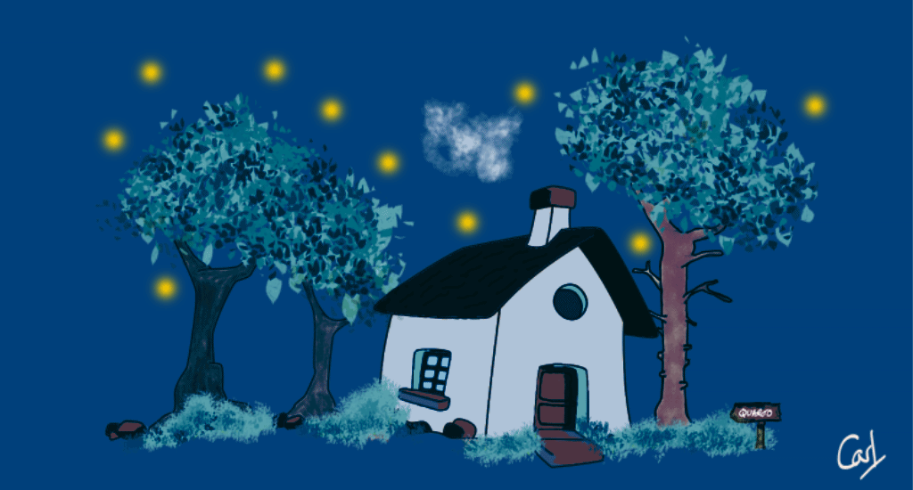
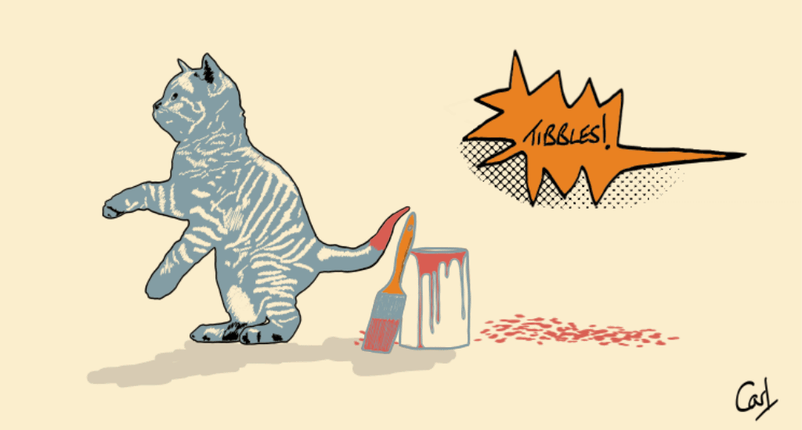
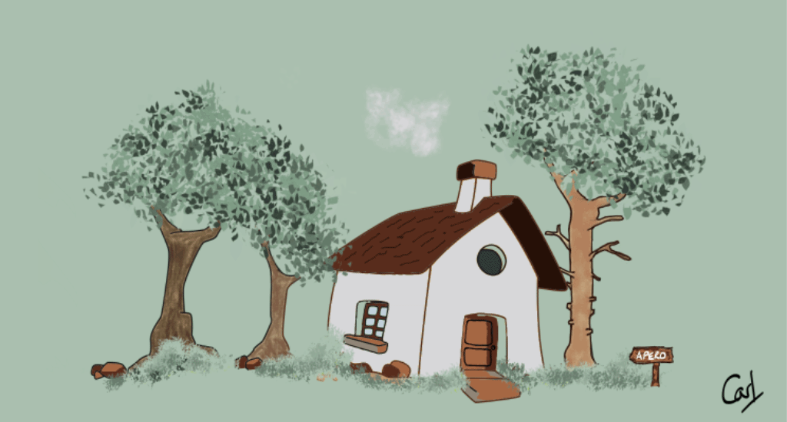
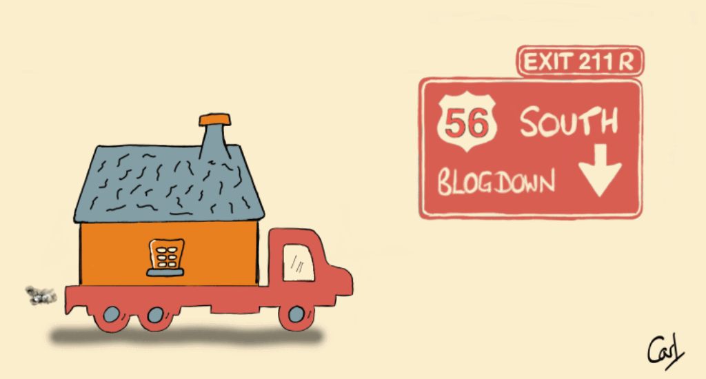

A few brief notes along the way
An open letter to humanity authored by an intelligence shaped by human questions
Leafier and leaner
A new package casting fillable shapes for ‘ggplot2’

Hexcited to unveil usedthese: an R package that tells you what you just did in case you can’t recall!

Making full use of Quarto and sprucing up an oft-visited 404 page

If you’re a cat, go find the nearest open pot of paint. But if you’re a data scientist, what to do?

Staying in Blogdown and renovating with the Hugo Apéro theme

Leaving Wordpress for a quieter life in Blogdown with the Hugo Academic theme